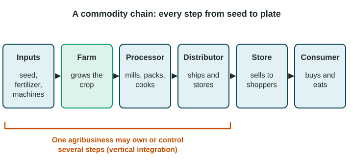

Spatial Organization of Agriculture
Large commercial operations have been replacing family farms because economies of scale lower their costs.
Part 1 · Hook
Why this matters
Part 2 · Before you start
What this builds on
Part 3 · Prerequisite check
Quick check before you start
1. What is commercial agriculture?
- Farming mainly to sell crops and animals for profit
- Farming mainly to feed the farmer's family
- Moving herds to fresh grass
- Clearing forest plots in turn
Show the answer
Commercial agriculture grows for sale.
- Correct: Farming mainly to sell crops and animals for profit:
- Farming mainly to feed the farmer's family:
- Moving herds to fresh grass:
- Clearing forest plots in turn:
2. What does carrying capacity describe?
- How many people an area can support sustainably
- How many people live in each square kilometer
- How fast a population grows
- How much land a farm covers
Show the answer
Carrying capacity is how many people an environment can support.
- Correct: How many people an area can support sustainably:
- How many people live in each square kilometer:
- How fast a population grows:
- How much land a farm covers:
Part 4 · See it
See it first

Part 5 · Step by step
How it works, step by step
- Machines and inputs cost the same whatever the farm's sizelarge farms produce each bushel more cheaply
- Large farms produce more cheaplythey outcompete and buy out smaller family farms
- Fewer, larger farms need fewer workersfarm families leave and rural towns shrink
Part 6 · Key ideas
Key ideas
- Economies of scale: bigger operations lower the cost of each unit, so large farms have been replacing family farms in the United States and other more developed countries.
- Agribusiness links farms to the companies that supply, process, ship and sell food.
- A commodity chain runs from inputs to farm to processor to distributor to store to consumer. Vertical integration means one company controls several steps.
- Technology raises yields and so raises carrying capacity, but consolidation also shrinks rural communities.
Part 7 · Misconception
A common mistake
The wrong idea: A commodity chain is the trucks and ships that carry food.
What actually happens: Transport is only one step. A commodity chain includes every step: inputs, growing, processing, distribution and sale.
Part 8 · Check yourself
Check yourself
Exam-style questions. Anything you miss goes into your review queue.
Data
US farms in 2017 and 2022
| Census year | Number of farms | Average farm size (acres) | Share of farms selling 1 million dollars or more | Their share of all farm sales |
|---|---|---|---|---|
| 2017 | about 2.04 million | 441 | 4% | 69% |
| 2022 | about 1.90 million | 463 | 6% | 78% |
Source: USDA Census of Agriculture, 2017 and 2022, as summarized in Choices magazine, 2024.
1. Which change from 2017 to 2022 does the table show?
- Fewer, larger farms, with sales more concentrated in big ones
- More farms, smaller on average, with sales spread more evenly
- Fewer farms, smaller on average, with big farms losing their share
- About the same farms, with no change in size or sales
Show the answer
Read each column: number down, size up, and the share of sales from farms selling a million dollars or more up from 69% to 78%.
- Correct: Fewer, larger farms, with sales more concentrated in big ones: Right: farm numbers fell, average size rose and the biggest farms took a larger share of sales.
- More farms, smaller on average, with sales spread more evenly: Every part is reversed: farms fell in number and grew in size.
- Fewer farms, smaller on average, with big farms losing their share: Average size rose from 441 to 463 acres, and the big farms' share rose.
- About the same farms, with no change in size or sales: The number fell by about 140,000 and size and concentration rose.
2. Which concept best explains why the share of sales from the largest farms rose?
- Shifting cultivation moves farms to new land each few years
- Subsistence agriculture grew as families ate more of their crops
- Economies of scale lower the cost per unit for large operations
- The Columbian Exchange brought new crops to US farms
Show the answer
Economies of scale reward size: lower costs per bushel or per animal let large operations outcompete small ones and buy them out.
- Shifting cultivation moves farms to new land each few years: Shifting cultivation is a tropical forest system, not a US trend.
- Subsistence agriculture grew as families ate more of their crops: US farms are commercial; the table is about sales.
- Correct: Economies of scale lower the cost per unit for large operations: Right: big farms spread the cost of machines and buy inputs in bulk, so they can sell more cheaply and grow.
- The Columbian Exchange brought new crops to US farms: That began in 1492; it does not explain a change from 2017 to 2022.
Image
A commodity chain from seed to plate
3. A flour mill buys wheat from Kansas farms and grinds it into flour. Which step in the diagram is the mill?
- Inputs
- Processor
- Distributor
- Consumer
Show the answer
In the chain, the processor step changes a raw farm product into something people buy, such as flour.
- Inputs: Inputs are what farms buy to grow crops: seed, fertilizer, machines.
- Correct: Processor: Right: the mill turns the raw crop into a product, the processor step.
- Distributor: The distributor ships and stores finished goods.
- Consumer: The consumer buys and eats the food at the end of the chain.
4. In the United States, many chicken companies supply the chicks and feed, contract farmers to raise the birds, then slaughter, pack and ship the meat. According to the diagram, what is this called?
- Subsistence agriculture by the contract farmers
- Monocropping on a single field year after year
- Vertical integration across several steps of the chain
- Extensive agriculture spread over large, open areas of grassland
Show the answer
The bracket in the diagram names it: when an agribusiness owns or controls several steps, the chain is vertically integrated.
- Subsistence agriculture by the contract farmers: The chickens are raised for sale to the company, not for the farmers' own families.
- Monocropping on a single field year after year: Monocropping is about crops on fields, not control of a chain.
- Correct: Vertical integration across several steps of the chain: Right: one company controls the inputs, farm, processing and distribution steps.
- Extensive agriculture spread over large, open areas of grassland: Chicken houses are intensive: many animals on little land.
5. Based on the diagram, why does a farmer often earn only a small share of the price a shopper pays for a box of cereal?
- Later steps each add costs and take part of the price
- The farmer is the last step before the consumer
- Cereal grain is grown by the store itself, not by farmers
- Inputs are paid for by the consumer, not the farmer
Show the answer
The farm is near the start of a long chain. Value is added, and money is taken, at each later step.
- Correct: Later steps each add costs and take part of the price: Right: processing, shipping and selling all come after the farm, and each takes part of the final price.
- The farmer is the last step before the consumer: The diagram shows the store, not the farm, just before the consumer.
- Cereal grain is grown by the store itself, not by farmers: The farm step grows the grain; the store sells the finished cereal.
- Inputs are paid for by the consumer, not the farmer: Farmers buy their own inputs, at the start of the chain.
6. A farmer with 2,000 hectares and a farmer with 200 hectares each buy the same 500,000-dollar combine harvester. Why does the larger farm gain an advantage?
- The larger farm pays less for the combine than the smaller one
- The smaller farm can grow more grain on each hectare with the same machine
- The larger farm needs no fuel or workers to run the machine
- The machine's cost is spread over ten times as many hectares
Show the answer
Economies of scale: the bigger the operation, the lower the cost of each unit produced, because fixed costs are spread more thinly.
- The larger farm pays less for the combine than the smaller one: They pay the same price; the gain comes from using it on more land.
- The smaller farm can grow more grain on each hectare with the same machine: Yield per hectare does not depend on farm size here.
- The larger farm needs no fuel or workers to run the machine: Both farms need fuel and operators.
- Correct: The machine's cost is spread over ten times as many hectares: Right: the cost per hectare is far lower on the large farm, an economy of scale.
Part 9 · Summary
Summary
Part 10 · Up next
What comes next
Part 11 · Connections